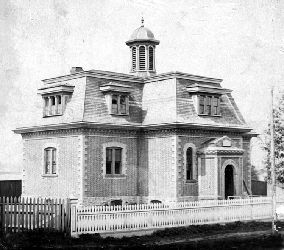
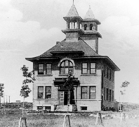
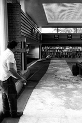
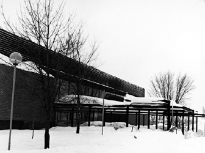

Photo Gallery
The Sault Ste. Marie Public Library - Page 1
 Sault Ste. Marie's free library was housed in two rooms on the second floor of the original Town Hall. Photograph: Sault Ste. Marie Public Library. |
Andrew Carnegie helped to fund the construction of a new public library in Sault Ste. Marie in 1903 with a grant of 1903. Photograph: Sault Ste. Marie Public Library. |
 The Steelton Branch Library opened as a lending library in what had once been the Steelton Town Hall. |
The new municipal complex that housed both the public library and the fire hall was destroyed by fire in March, 1907. It was rebuilt in 1909. Photograph: Sault Ste. Marie Public Library. |
|
The Carnegie Public Library constructed in 1909 served as the main branch in the library system until 1966. Spatial and other limitations made a new library a necessity. Photograph: Sault Ste. Marie Public Library |
The current Sault Ste. Marie Public Library was the Centennial Project of the City of Sault Ste. Marie. Photograph: Sault Ste. Marie Public Library. |
 Putting the finishing touches to the carpeting prior to the grand opening of the Sault Ste. Marie Public Library in 1966. Photograph: Sault Ste. Marie Public Library. |
 The front entrance to the Sault Ste. Marie Public Library. Photograph: Sault Ste. Marie Public Library. |